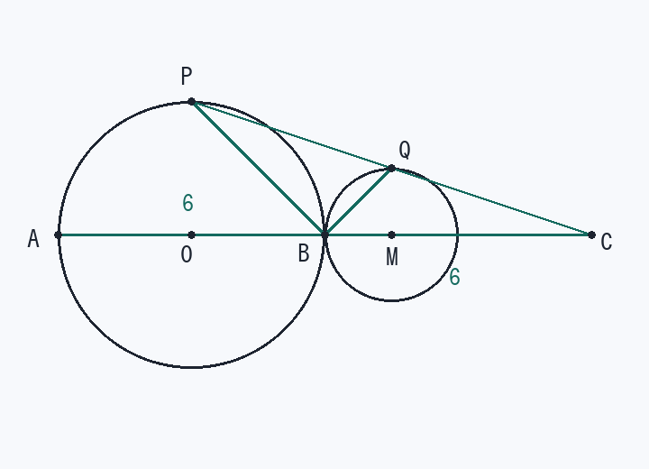

第6回 中点が動いてできる線と、面積の最大
点 C は直径 AB の延長線上に、AB = BC となるようにとった点で、点 P は円 O の周上を動く点である。PC の中点を Q とするとき、
(1) 点 Q が動いてできる線の長さを求めなさい。
(2) △BPQ の面積が最大となるときの △BPQ の面積を求めなさい。（AB = 6 cm とする）
(1) 点 Q が動いてできる線の長さを求めなさい。
(2) △BPQ の面積が最大となるときの △BPQ の面積を求めなさい。（AB = 6 cm とする）

解法の型
動く点と固定点の中点は、その固定点から見て 1/2 に縮んだ図形をえがく。→ 円なら半径 1/2 の円。
中点で切った三角形の面積は、大きい三角形の 1/2。
面積の最大は「固定される底辺 × 動く高さ」に分ける。
(1) Q が動いてできる線の長さ
- 座標をおく円Oの中心を原点に：A(−3, 0)、B(3, 0)、C(9, 0)、半径 = 3
- Q を式で書くP(x, y) のとき Q( (x + 9)/2 , y/2 )
- OC の中点 M(4.5, 0) からの距離を見る
MQ = ½ OP = ½ × 3 = 1.5（P がどこにあっても一定）
Q は「C を中心に、円 O を 1/2 に縮めた円」の上を動きます。
- 円周の長さQ の軌跡：中心 M(4.5, 0)、半径 1.5 の円
長さ = 2π × 1.5 = 3π (cm)
(2) △BPQ の最大
- 大きい三角形に直すQ は PC の中点 → PQ = QC、高さは共通
△BPQ = ½ △BPC - 底辺と高さに分ける底辺 BC = 6（固定） 高さ = P と直線 AB の距離 ≦ 3（半径）
- 最大の位置P が円の上端（または下端）のとき最大
△BPC = ½ × 6 × 3 = 9 - 半分にする△BPQ = ½ × 9 = 9/2 (cm²)
検算：P(0, 3) のとき Q(4.5, 1.5)。B(3, 0) を基準に P → (−3, 3)、Q → (1.5, 1.5) として △BPQ = ½|(−3)(1.5) − (3)(1.5)| = 9/2。○
覚えるべきこと（在庫に入れる1行）
中点の軌跡は半径 1/2 の円／面積の最大は「固定の底辺 × 動く高さ」に分ける
類題（翌日、何も見ずに）
- PA の中点 R が動いてできる線の長さ。
答え
中心 (−1.5, 0)、半径 1.5 の円 → 3π cm
- △OPQ の面積が最大になるときの面積。
答え
△OPQ = ½△OPC、OC = 9、高さ ≦ 3 なので △OPC ≦ 27/2、よって最大 27/4 cm²